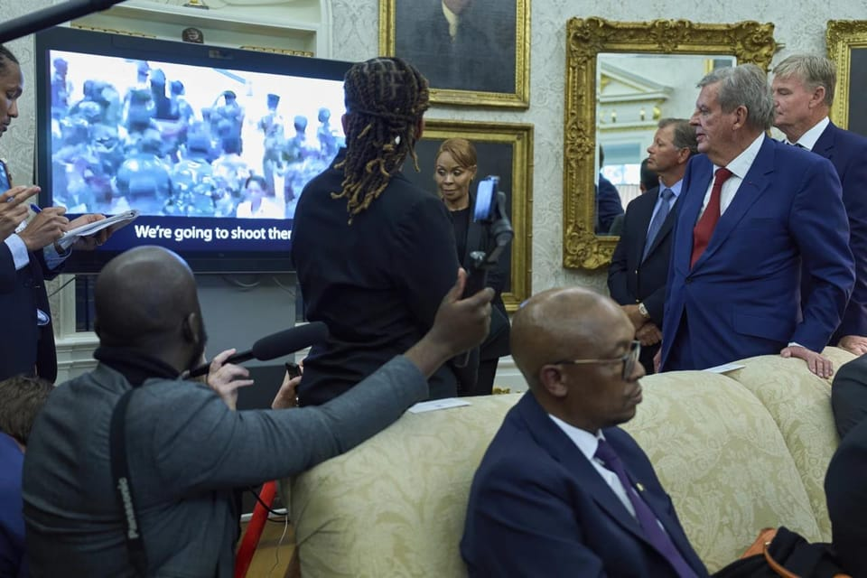

世界苦茶05月22日新闻 | 50条 | 中国向WHO捐赠5亿美元

中国向WHO捐赠5亿美元 | 央视涉及台湾问题误读“两国” | 朝鲜驱逐舰下水严重事故 | 马来西亚在宣布采用华为芯片后撤回 | 以色列继续袭击加沙并枪击多国外交官｜特朗普面对南非总统播放所谓白人种族屠杀视频
每天三件事：
AI实验项目
苦茶数据
美元兑人民币：7.20（昨日7.21，前日7.21）
美元兑日元：143.02（昨日144.07，前日144.13）
上证指数：3380（昨日3386，前日3380）
标普500指数：5844（昨日5940，前日5963）
比特币：111047（昨日106341，前日105022）
布伦特原油：64.29（昨日66.46，前日65.01）
中国新闻
• 中国向世卫组织捐赠5亿美元，填补美国撤资后的真空： 中国承诺向世界卫生组织捐赠5亿美元，在美国退出后，有望成为该组织最大的国家资助方，从而扩大其在全球的影响力。中国国务院副总理刘国中在日内瓦举行的世界卫生大会上宣布此项捐赠，称此举是为了反对“单边主义”——这一用词常被北京用来形容华盛顿。特朗普总统于1月下令美国退出世卫组织，这使中国有望成为其最大出资国和最具影响力的成员。刘国中在大会上表示：“当前世界面临单边主义和强权政治带来的影响，全球健康安全面临重大挑战。”他还称：“中国坚信，只有团结互助，才能共同打造健康世界。”这笔5亿美元的捐款将在未来五年内陆续发放，成为中国在特朗普“美国优先”政策导致国际领导真空时填补空缺的明确例证。
• 中央网信办5月21日启动“涉企网络黑嘴”专项整治，为期2个月： 对象包括，恶意集纳企业负面信息，唱衰企业或行业发展前景。歪曲解读企业股权结构、财务报表、产品包装等公开信息或新闻报道。翻炒企业旧闻旧事，蹭炒涉企热点事件进行恶意营销。打假维权，到企业经营场所直播、拍摄，干扰企业正常生产经营。
• 公安部提防控枪爆 ：湖北省会武汉市发生致命枪击案后，中国公安部开会强调，要深化大数据建设应用，加强社会面巡逻防控，对涉枪涉爆等违法犯罪打源头、端窝点。据中国公安部官方微信公众号消息，中国全国治安管理工作视频会星期二在北京召开。会议提出，要围绕提升公安机关新质战斗力，建强专业治安警种、完善现代警务机制、深化大数据建设应用，做到防范更主动、打击更精准、治理更深入、服务更高效。会议强调，要突出防范化解风险，全力维护社会治安大局稳定。
• 中国三大战区配医院船 ：中国海军“吉祥方舟”号医院船亮相，东部、南部和北部三大战区均已实现医院船的战略部署。据中国央视新闻报道，“吉祥方舟”号医院船在黄海某海域开展多要素、全流程医疗救护演练，检验舰艇整体训练水平，锤炼官兵遂行多种医疗救护任务的能力。该船舷号为868，是中国自主设计建造的第三艘万吨级远洋医院船。
• 议员促港采购国产电车 ：中国官方要求公务车集中采购选用国产车并优选新能源，有香港议员倡议特区政府也采购中国大陆电动车。据《星岛日报》报道，近年港府积极推动电动车普及化，去年共采购86部新电动车，但当中九成是日本品牌。香港工联会议员陆颂雄早前质疑港府为何不购入性价比更高的中国大陆品牌电动车，港物流署解释称，采购是按投标评分。
• 解放军登陆演练 ：台湾总统赖清德上任满一周年之际，中国大陆解放军部队在闽南海域举行两栖登陆训练。据中国央视军事频道报道，中国解放军陆军第73集团军某合成旅星期二早上在闽南某海域，出动05式两栖战车进行海上驾驶和登陆训练。此次训练按编组进行，驾驶员需要全程闭舱驾驶，在1.5公里的海上训练路段内，通过“直通路”“桩间限制路”“蛇型限制路”等多种限制障碍路后完成登陆，以训练其精准感知方向和精准操作战车的能力。
• 央视主播读错“祖国” ：台湾总统赖清德星期二发表就职周年演说，中国大陆央视主播当天在播报国台办的回应时，误将“祖国”读成“两国”。中国大陆国台办星期二针对赖清德就职周年演说内容回应：“不管台湾地区领导人讲什么、怎么讲，都改变不了台湾是中国一部分的地位和事实，改变不了两岸关系向前发展的方向和步伐，更阻挡不了祖国终将统一、也必将统一的历史大势。”据《联合报》等台湾媒体截取的央视节目视频片段，中国中央电视台新闻频道《共同关注》栏目的主播在播报时，将国台办回应中“更阻挡不了祖国终将统一、也必将统一的历史大势”中的“祖国”，读成“两国”，“更阻挠不了‘两国’……更阻挡不了祖国终将统一，也必将统一的历史大势。”在发现读错后，主播重新将这句话的正确版本念了一遍。
亚太印太新闻
• 樱井翔专访赖清德 ：台湾总统赖清德就职周年前夕，日本国民组合“岚”成员樱井翔以新闻主播身份访台，在台湾总统府对赖清德进行专访，节目播出后引发中国大陆网民不满。综合《自由时报》《镜周刊》和TVBS新闻网报道，日本电视台进行第二次世界大战结束80周年企划“勿使现在沦为战前”，新闻节目《News Zero》以“日本周遭有事”为主题进行一周特集。报道称，身为《News Zero》主播之一的樱井翔，星期一到访台湾总统府专访赖清德，星期二也出席赖清德就职周年活动。
• 台共谍案五人遭除籍 ：台湾执政的民进党召开中评会，决定将五名涉及中国大陆间谍案件的党公职人员开除党籍。综合台湾《联合报》《中国时报》报道，民进党中央评议委员会星期三针对数名党员涉嫌参与共谍案进行讨论审议。经与会委员深入讨论后，一致决议将邱世元、黄取荣、何仁杰、吴尚雨、盛础缨五人除名，并开除党籍。民进党强调，此举旨在以正视听，捍卫党纪与台湾安全。
• 尹锡悦观选举片惹议 ：韩国前总统尹锡悦星期三到电影院观看“选举舞弊”题材的纪录片，引发国民力量党内非议。韩联社报道，虽然国民力量党已同正式退党的尹锡悦划清界限，但党内部依旧对此“心存不满”，担心尹锡悦星期三的活动会给国民力量党选情带来负面影响。国民力量党紧急对策委员会委员长金龙泰接受记者采访时说，尹锡悦已经退党，目前与国民力量党毫无关系。从个人角度来看，尹锡悦应该就他去年12月3日发布紧急戒严令的行为进行深刻反思并自律自重。
• 克林顿秘密访韩 ：韩国政府消息人士星期二透露，美国前总统克林顿近期以非公开形式访问韩国。韩联社报道，网络社交媒体20日出现大量有关在首尔光化门等地偶遇克林顿的帖子和照片。据悉，克林顿此行并无与韩方高级政府官员正式会晤的日程安排，也没有与韩国企业家会面的计划。美国极右翼阴谋论者卢默近日在社交平台X声称，克林顿即将访问韩国，与东北亚地区规模最大的私募股权基金公司——安博凯直接投资基金会长金秉奏会面。卢默还将金秉奏称作“韩国首富”，但未说明二人此次会面的原因。
• 自杀式袭击炸毁校车，巴基斯坦指责印度策划： 巴基斯坦西南部一辆校车遭遇自杀式汽车炸弹袭击，造成至少4名儿童死亡，数十人受伤。袭击发生在俾路支省，尽管暂无组织宣称负责，该地区长期陷于动荡，是多个分离主义武装频繁发动袭击的热点。巴基斯坦政府指责印度与袭击有关。事件发生之际，印巴正处于一项脆弱的停火协议中，此前在印控克什米尔帕哈尔甘地区发生大屠杀，引发两国冲突。新德里方面一直否认参与任何此类袭击事件。（翻評：巴基斯坦）
• 巴基斯坦在未达经济增长目标后寻求再借49亿美元： 在未能实现增长目标后，巴基斯坦政府正计划从国际银行再借款49亿美元，以满足其外部融资需求，并增强外汇储备。本月早些时候，国际货币基金组织已批准向这一经济困境中的南亚国家立即发放10亿美元的援助。据ARY新闻报道，伊斯兰堡计划以7%至8%的年利率从国际商业银行获得26.4亿美元的短期贷款，无附带严格条件或绩效要求。此外，政府还寻求从商业银行以长期协议方式筹集22.7亿美元。据ANI通讯社报道，伊斯兰堡目前正与四家主要国际银行洽谈，其中包括向中国工商银行申请11亿美元贷款，以及分别向渣打银行和迪拜伊斯兰银行申请5亿美元贷款。此外，还在寻求亚洲开发银行对一笔5亿美元贷款提供商业担保。 （翻評：這就是要錢，看中國和中東願意不願意支持了。）
• 日农林部长请辞 ：因“从不买米”发言陷入政治风暴的日本农林部长江藤拓星期三宣布辞职。共同社引述日本政府相关人士说，首相石破茂基本决定由自民党前选举对策委员长小泉进次郎接任农林部长。小泉进次郎曾担任日本环境部长。江藤拓说，他为自己的不当讲话引发的风波承担责任。
• 朝鲜5月21日在清津造船厂举行的新建5000吨级驱逐舰下水典礼发生严重事故： 下水过程中，因指挥不熟、操作不慎，没能保障底盘移动平行度。船尾部分的下水滑板先脱离搁浅，部分区段船底被破孔导致船舰失衡，船首部分未被脱离船台。观摩典礼的金正恩批评：这起事故完全由做事不慎、不负责任、不科学的经验主义所造成，是不可接受的犯罪行为。事故责任完全在于军需工业部等相关单位和清津造船厂的有关人员。将在6月召开的党中央全会上立案审查。此事是直接关乎国家权威的政治问题，要无条件在全会召开前完成驱逐舰修复。
科技新闻
• 中商务部反制AI限制 ：美国警告业界使用中国先进计算机晶片的风险，中国商务部星期三表示，美方措施涉嫌构成对中国企业采取的歧视性限制措施，任何个人或组织执行或协助执行，将涉嫌违反中国的反外国制裁法，须承担相应法律责任。美国商务部网站调整了AI晶片出口管制指南表述，将“在世界任何地方使用华为昇腾晶片均违反美国出口管制法规”调整为“警告业界使用中国先进计算机晶片，包括特定华为昇腾晶片的风险”。中国商务部新闻发言人星期三就此发表谈话称，美方措施是典型的单边霸凌和保护主义做法，严重损害全球半导体产业链供应链稳定，剥夺其他国家发展先进计算晶片和人工智能等高科技产业的权利。
• 大马宣布采用华为芯片后迅速撤回该说法： 马来西亚周一曾宣布将打造首个由华为芯片驱动的人工智能系统，但一天后便与该声明划清界限。马来西亚通讯部副部长张念群周一在一次演讲中表示，马来西亚将率先在全国范围内启用未指明型号的华为“昇腾GPU驱动的AI服务器”。张念群表示，马来西亚将在2026年前部署3000台华为主要 AI 产品，中国初创公司 DeepSeek 也将向马来西亚提供其一款AI模型。该项目迅速引起了白宫的关注，白宫正努力阻止北京占领外国人工智能市场。张志贤办公室随后表示将撤回其关于华为的言论，且未作任何解释。目前尚不清楚上述项目是否会按原计划进行。 （翻評：馬來西亞是最近最親共的大國。）
• 孙宇晨持币赴特朗普宴 ：持有超过143万个“特朗普币”的加密货币平台波场创始人孙宇晨称，自己将作为“特朗普总统的头号粉丝”参加他的晚宴。孙宇晨星期二在社交平台X上发文称，自己位居“持有特朗普币最多者”的排行榜首位，将出席这个星期四在特朗普位于弗吉尼亚的高尔夫俱乐部举办的晚宴。据财联社，“特朗普币”官方网站上个月宣布，将在5月22日邀请持币量最多的220人参与特朗普晚宴，同时持有量前25名还能获得参观白宫的机会。孙宇晨目前共持有超过143万个“特朗普币”，价值约1967万美元。
• 黄仁勋批AI晶片管制 ：中美就晶片问题交锋，英伟达首席执行官黄仁勋星期三表示，美国对人工智能晶片出口至中国的管制“是一次失败”。据路透社报道，黄仁勋在台北国际电脑展上说，自美国总统拜登上任初期以来，英伟达在中国的市场份额已从95%降至50%。黄仁勋的发言正值中美最新一轮就晶片问题交锋。美国商务部上周发布指引，警告企业使用中国晶片可能违反美国出口管制规定。
• 特朗普签AI色情禁令 ：美国总统特朗普签署一项法案，旨在保护女性免受“复仇色情”的伤害。新法规定未经当事人同意而发布色情图片和视频，无论是真实拍摄还是由人工智能生成，均构成犯罪行为，必须从网络平台上删除。这个《删除法案》之前在美国参众两院获得两党广泛支持，顺利通过。特朗普周一在白宫举行的法案签署仪式上说：“随着AI图像生成技术的兴起，无数女性受到深伪图像和其他违背她们意愿传播的露骨图像的侵扰，今天我们将把这些行为全部定为违法。”特朗普解释说，任何人在未经当事人同意的情况下故意传播露骨图像，将面临最高三年监禁，而未能在接获受害人通知后48小时内删除这些违法内容的社媒平台和网站将须承担民事责任。
• OpenAI收购AI设备公司 ：当地时间周三，OpenAI公司宣布，以近65亿美元估值的全股票交易收购前苹果首席设计官乔纳森·艾维联合创办的人工智能设备初创公司io。这笔OpenAI迄今为止的最大规模收购，也标志着 “AI硬件大战” 正式定档。艾维和奥尔特曼确认，他们的首批AI设备计划于2026年面世。据其介绍，两人从两年前开始低调地展开合作，随后逐渐意识到“要实现开发、工程化并量产新一代产品线的宏图”，必须创立一家全新的公司。OpenAI公司在一份声明中表示，艾维将“全面承担OpenAI和io的深度创意与设计职责”，不过艾维本人与创意团队LoveFrom仍将保持独立状态。
财经新闻
• 欧盟提美新贸易案 ：欧盟预计向美国提交修改后的贸易提案，以期推动与特朗普政府的谈判，眼下外界对双方能否达成协议仍然存疑。彭博社报道，知情人透露，这份新提案包含了考虑美国利益的提议，包括国际劳工权利、环境标准、经济安全，并逐步将双方非敏感农产品以及工业品的关税降至零。文件还概述了在能源、人工智能和数字互联领域的相互投资和战略采购。消息指出，欧盟希望与美国合作，并寻求达成平衡且互惠的协议。据悉，双方仍在相互考察，欧盟委员会或须得到成员国的授权才能开始正式谈判。
• 德经济预测零增长 ：德国经济专家委员会发布经济预测报告，预计2025年德国经济零增长，较此前增长0.4%的预期值明显下调，这意味着德国经济或将连续三年未能实现增长。星期三发布的春季报告指出，当前德国经济仍处于明显的疲软周期。审批程序等因素持续制约整体经济增长，结构性变化正在加速演进，未来将波及目前仍保持强劲发展的行业与地区。新华社引述报告说，德国经济近期将面临两大关键影响因素：美国关税政策和德国财政刺激措施。德国经济专家委员会主席莫妮卡·施尼策尔说，美国关税政策给本已疲软的德国出口行业带来额外负担，若关税急剧且不可预测地上涨，出口下滑态势恐将加剧。
• 印尼年内再降息 ：面对全球贸易紧张局势及近期本币升值压力，印度尼西亚中央银行今年内第二度下调基准利率，以提振国内经济动能。彭博社报道，印尼央行星期三宣布，将基准利率下调25个基点至5.5%，为2022年以来的最低水平。此举符合彭博社对35名经济学家的调查结果，其中22名预期本次将降息，其余则认为货币政策将维持不变。
• 美多州联手诉关税 ：美国纽约、伊利诺伊、俄勒冈等12个州的总检察长星期三向联邦法院提起联合诉讼，要求中止特朗普总统新实施的“解放日”关税，指他滥用《国际紧急经济权力法》赋予的权限，未经国会授权，擅自对多国进口商品全面加征关税。路透社报道，这起诉讼由位于纽约曼哈顿的国际贸易法院审理，将由三名法官组成的小组听取辩论。原告州政府多为民主党执政，指责特朗普以“空白支票”的方式任意干预贸易规则，绕过立法程序，且未给予公众充分参与政策讨论的机会。
• 中警告限制华为者 ：美中科技摩擦再度升级，中国政府警告将对协助美国限制华为晶片的行为采取法律行动，令刚达成的90天贸易“停火”及维持高层沟通的努力面临新的不确定性。彭博社报道，中国商务部星期三发声明称，任何配合美国对华为实施出口限制的机构或个人，或违反《中华人民共和国反外国制裁法》。尽管声明未具体说明惩处措施，但此举被视为北京在科技战升级背景下发出的法律威慑信号。此前，美国商务部警告，全球范围内若使用华为生产的半导体产品，将被视为违反美方出口规定，但华府随后又撤回“全球”字眼。
• 巴中拟拓双边合作 ：巴基斯坦表示将进一步深化与中国之间的双边贸易与投资关系。据路透社报道，巴基斯坦外长达尔星期二在北京与中国外长王毅会晤。根据巴基斯坦外交部发布的消息，双方同意在保持密切沟通的基础上，在贸易、投资、农业及工业化等领域深化合作。巴基斯坦外交部说，达尔与王毅还与阿富汗代理外长穆塔基举行三方会谈。三方达成共识，计划将中巴经济走廊延伸至阿富汗，并在中国“一带一路”倡议框架下拓展合作。
• 中对欧投资大增47% ：尽管中欧贸易摩擦持续加剧，但有报告显示，中国去年对欧盟和英国的直接投资总额达100亿欧元，同比增长47%，写下2016年以来最大增幅。美国研究机构荣鼎集团星期三在官网发布的研究报告，呈现上述数据。报告称，中国去年对欧盟和英国的直接投资上升47%，主要受绿地投资和并购活动双双增长而带动。绿地投资指的是投资者在外国开设公司，从头开始建造新的运营设施。
• 美国拟对东南亚光伏电池板最高征3400%关税： 美国国际贸易委员会20日做出最终判断，认定从越南、泰国等东南亚四国进口的光伏电池板价格被不当压低。ITC 当天进行了投票。最终判断认定从越南、泰国、柬埔寨、马来西亚进口的 “晶体硅光伏电池” 因各国政府的补贴而在以低于合理价格的价格销售。预计美国商务部将在未来一周内启动反补贴税和反倾销税。针对四个国家和企业的税率各不相同，最高的柬埔寨企业，两项关税合计起来将超过650%。针对主要的光伏电池板企业还以企业为单位设定了税率。许多企业被视为中国企业的当地法人，针对柬埔寨企业的税率最高将超过 3400%。
• 青年人拖累消费增速 ：一份宏观经济研究报告显示，20岁－39岁人口成为中国消费增速下降的主要原因，而60岁以上老人对消费增长贡献最大。东吴证券星期一发布研报，题为《谁是消费“领头羊”，人口周期改变消费模式》，作者是证券分析师芦哲和占烁。报告显示，20岁－39岁人口的消费总量虽然在中国居民里占比最高，但他们也是最近几年消费增速下降的主要原因。
• 日本拟对中包裹征税 ：日本正考虑对从中国进口的廉价小包裹征税，加入美国等加强小包裹进口监管的国家行列。彭博社星期二引述日本内阁府消息报道，日本政府税务专家小组上周就现行小额包裹免税制度展开讨论，重点关注市场公平性问题，以及该渠道可能被用于夹带毒品或仿冒品入境。一旦政策调整，从希音、Temu等平台购买并寄往日本的小包裹，未来可能不再享有免税待遇，需缴纳约10%的消费税。目前，日本对货值低于1万日元的小包裹普遍给予免税。
• G7商对中产品设关税 ：七国集团已开始磋商对供应过剩、价值低廉的中国产品征收小额关税。彭博社报道，G7财长会议星期二在加拿大阿尔伯塔省班夫开幕，加拿大财长商鹏飞在开幕新闻发布会上说，会议议程将包括如何协调各国行动、解决产能过剩和非市场行为问题。他还说，G7将采取进一步措施以遏制中国产品供应过剩的问题。
• 美裁中电池材料补贴 ：美国商务部初步裁定中国关键电池材料产业享有不公平的高额政府补贴，为美国对相关电池组件征收反补贴税提供依据。美国商务部星期二发布新闻稿称，此次调查起于美国石墨生产商等利益方的申诉，指控中国政府通过大规模补贴人为压低石墨、硅等阳极活性材料价格，削弱美企在全球市场的竞争力。这类材料是电动汽车电池的重要组成部分，包括石墨、硅等核心原料。根据初步裁定，美国商务部发现，中国相关企业获得的补贴率最高达721%。
俄乌战争
• 普京视察库尔斯克核站 ：俄罗斯总统普京5月20日视察库尔斯克州。普京参观了库尔斯克二号核电站的施工现场，会见了志愿者组织成员以及库尔斯克州代理州长欣施泰因等官员。这是俄罗斯声称夺回库尔斯克后普京的首次到访。
• 俄乌和平备忘录推进 ：俄罗斯总统新闻秘书佩斯科夫说，俄乌和平协议备忘录工作正在积极推进。新华社报道，佩斯科夫星期三在一简报会上说，这些工作的大部分内容“出于显而易见的原因，尚不能被公开”。他说，俄罗斯欢迎所有希望协助解决俄乌冲突的国家的努力。佩斯科夫还说，俄乌两国进一步谈判的地点尚未决定。目前，俄罗斯正努力落实与乌克兰在土耳其伊斯坦布尔达成的千名战俘交换协议。
• 美称制裁恐妨俄谈判 ：美国国务卿鲁比奥说，总统特朗普认为，如果美国威胁对俄罗斯实施更多制裁，莫斯科可能退出与乌克兰的和平谈判。彭博社报道，鲁比奥星期二出席参议院外交委员会听证会，民主党籍特拉华州参议员库恩斯问鲁比奥，特朗普政府是否计划对俄罗斯实施更多制裁，或向乌克兰提供更多武器。鲁比奥说：“如果你开始威胁制裁，俄罗斯就会停止对话。”他说：“我们与他们保持对话、推动他们重返谈判桌是有价值的。”
其他新闻
• 以持续轰炸加沙致82死 ：以色列5月21日继续袭击加沙，过去一天造成至少82人死亡、262人受伤。以色列国防军称，袭击了加沙地区超过115个恐怖目标。当地人道主义局势恶化。有民众称，加沙没有食物和水。水泵由于缺少燃料也无法工作。世界粮食计划署代表称，目前以色列允许的援助数量根本不够。此外，以军还包围了加沙北部最后2家仍在运转的医院，阻止人员进出。教宗良十四世21日在首次公开接见活动中呼吁援助抵达加沙，结束对加沙民众造成的伤亡。联合国20日表示，虽然目前已有98百辆援助卡车进入加沙，但由于以色列要求其将援助物资重新装载到单独的卡车上，援助物资未能运送至分发点。此外，数十名以色列活动人士试图阻拦卡车，但被警方阻止。在约旦河西岸，西方外交官组成的代表团在杰宁难民营入口附近进行人道主义观察时遭遇以军鸣枪示警。以军称，代表团偏离了批准路线因此开枪警告。欧盟称，开枪警告不可接受，呼吁以色列调查。卡塔尔领导人表示，以色列和哈马斯存在巨大的分歧无法弥合。以色列20日称将留下较低级别的官员继续谈判。
• 5月21日晚，两名以色列驻美大使馆工作人员在华盛顿首都犹太博物馆外遭枪击身亡： 当时他们刚参加完馆内一场活动。以色列驻美大使耶希尔·莱特表示，遇难者是一对即将订婚的年轻情侣，男方本周刚购买订婚戒指，原计划下周在耶路撒冷求婚。警方称，嫌疑人在馆外徘徊后向四人群体开枪，随后走入馆内，被活动保安控制。他在被捕时高喊“解放巴勒斯坦”。馆内目击者称，嫌疑人神情紧张，一度拿出一条库菲亚头巾，并持续呼喊。华盛顿警方表示此案不构成持续威胁。
• 以军向在约旦河西岸访问的法国及多国外交官“警告性射击”引发愤怒： 一批外国外交官在访问以色列占领下的约旦河西岸杰宁难民营时遭遇枪击，引发国际愤怒。巴勒斯坦当局表示，外交团原本是来观察杰宁的人道局势。目击者称，大约20位外交官当时正由巴勒斯坦方面简报情况，站在难民营入口处附近，下午2点前突然听到枪声。该代表团包括来自欧洲、地区及西方国家的外交官。虽无人受伤，但事件引发了对以色列军方在敏感地区行为的广泛批评。一名援助工作者不愿透露姓名，称担心遭到报复。
• 欧盟启动以协议审查 ：欧盟将援引《欧盟－以色列联系国协议》中有关人权的第二条款，启动对该协议的审查。新华社报道，欧盟外交与安全政策高级代表卡拉斯星期二在欧盟外长会后举行的新闻发布会上说，欧盟成员国外长对中东局势进行了深入讨论。当前的加沙地带局势堪称灾难。绝大多数外长赞成对《欧盟－以色列联系国协议》进行审查。卡拉斯说，以色列允许进入加沙地带的援助“杯水车薪”，必须允许援助物资“立即、大规模、不受阻碍地”进入加沙地带，这是当务之急。目前的首要任务是拯救生命。
• 哈梅内伊拒美铀限制 ：伊朗最高领袖哈梅内伊说，伊朗不需要任何方面对其铀浓缩权利的许可。新华社引述伊朗伊斯兰共和国通讯社报道，哈梅内伊星期二在伊朗首都德黑兰出席纪念伊朗前总统莱希的活动并发表讲话。他说，美方代表声称不允许伊朗进行铀浓缩，这是一个重大错误。伊朗奉行自己的政策，“没有人在等待任何方面的许可”。哈梅内伊说，与美国的谈判还没有取得任何结果，未来仍不确定，但他不指望谈判能取得任何积极成果。
• 传以色列或袭伊朗 ：据报道，以色列可能计划对伊朗采取军事行动，引发市场对中东原油供应受扰的担忧，国际油价显著上扬。星期三，布伦特原油期货价格一度升至每桶约66美元。美国有线电视新闻网近日援引消息人士报道称，美国近期获得情报显示，以色列或正在准备袭击伊朗的核设施，目前尚不清楚以方是否已作出最终决定。基于以色列对美伊核协议谈判的看法有异，美方认为近几个月以色列袭击伊朗核设施的可能性已显著上升。挪威睿咨得能源在一份报告中指出，当前俄罗斯和委内瑞拉的地缘政治局势也未有定数，加之夏季原油需求的季节性因素，预计国际油价将继续上涨。
• 美接受卡塔尔赠机 ：美国国防部证实，美国正式接受卡塔尔为总统特朗普提供的波音747飞机作为“空军一号”使用。美国国防部发言人帕内尔星期三说，接受这架飞机符合所有联邦法规。美国空军发言人则说，空军将授予一份改装该飞机用于行政空运的合同。路透社报道指，这架价值4亿美元的豪华客机，很可能是美国政府史上最昂贵的外国赠礼。
• 特朗普播放白人屠杀片 ：美国总统特朗普星期三在白宫接待来访的南非总统拉马福萨时，突然播放一段视频，指责南非出现“针对白人的种族屠杀”。在这场被美国媒体称为“伏击”的会见中，特朗普突如其来的举动导致本想借此行改善两国关系的拉马福萨颇为震惊。美国媒体形容，当天的会谈原本气氛友好，后因特朗普突然播放一段宣称南非出现“白人种族屠杀”的视频而陷入紧张。视频显示南非官员呼吁对白人农民施加暴力。
• 小特朗普暗示参选 ：美国总统唐纳德·特朗普的长子小唐纳德·特朗普暗示，他可能会竞选公职，并尝试接替他的父亲成为美国总统。彭博社报道，小特朗普星期三在卡塔尔经济论坛上被问及是否考虑参选时说：“我不知道，也许有朝一日吧。”小特朗普的大部分职业生涯都在特朗普集团工作，公司专注于高端房地产开发。他也是特朗普经济政策的坚定支持者。在特朗普第二个任期中，小特朗普的影响力日益上升，并曾积极推动万斯出任副总统。
• 匈牙利退出国际刑院 ：匈牙利国会表决通过匈牙利退出国际刑事法院的动议。新华社报道，匈牙利外交部长西雅尔多星期二在社交媒体平台发布视频说，相关动议以134票赞成、37票反对、七票弃权获得通过。匈牙利政府将根据《国际刑事法院罗马规约》规程，将决定通知联合国秘书长。西雅尔多说，国际刑事法院出于政治动机的运作方式引发人们对法院公正性和可信度的担忧。匈牙利不能支持一个以政治偏见方式运作的机构。
• 拉马福萨访美求协商 ：星期三将到美国白宫访问的南非总统拉马福萨肩负着一项艰巨的任务，他得设法说服美国总统特朗普与南非达成贸易协议，不要像他刚开始第二总统任期时那样斥责和惩罚南非。路透社报道，特朗普抨击南非旨在纠正种族隔离不公正的土地改革法，以及针对以色列的种族灭绝诉讼，不但取消对南非的援助、驱逐南非大使，还以种族歧视为由授予南非白人移民阿非利卡人难民身份，南非政府指种族歧视的指控毫无根据。拉马福萨办公室指出，拉马福萨此次访美将重点关注重塑双边、经济和商业关系。
• 美拒赴南非G20峰会 ：美国国务卿鲁比奥说，总统特朗普将不会到南非出席二十国集团领导人峰会，原因是南非与美国政策“不一致”。彭博社报道，鲁比奥星期二在参议院外交委员会听证会上说：“我们选择不参加今年由南非主办的G20峰会，无论是外长级别会议还是总统级别会议。”鲁比奥说：“他们显然在全球舞台和多个跨国组织中，在一次又一次的投票中，做出不利于美国利益的决定。”
• 美国总统特朗普5月20日宣布了耗资约1750亿美元、名为“金穹”的导弹防御系统的概念： 他预计该系统将在其任期结束前全面运行。美国防部多年来一直警告，需要更新针对中俄先进导弹的对策。“金穹”在设想中具备陆基和天基能力，能够在发射前、助推段、中段和末段四个阶段拦截导弹。该计划重点专注在导弹早期或途中予以拦截。此前国防部制定了中、高、超高成本三种计划，其差异取决于购买的卫星、传感器和天基拦截器的数量。美国国会预算办公室本月估计，仅“金穹”计划天基部分在未来20年将耗资高达5420亿美元。目前尚不清楚特朗普的最终选择以及成本如何估计。
• 欧盟向自由欧洲电台提供紧急资金，以填补美国资金中断后的缺口： 由于特朗普政府中止对这一支持民主的媒体机构的拨款，指责其新闻议程具有自由主义偏见，欧盟周二同意向自由欧洲电台提供紧急资金以维持其运作。该电台起源于冷战时期，目前以27种语言向东欧、中亚和中东23个国家播出节目。其法律团队一直在法庭上与美国政府交锋。欧盟外交与安全政策高级代表卡娅·卡拉斯表示，欧盟外长们已同意签署一份价值550万欧元的合同，以“支持自由欧洲电台的重要工作”。她称这笔“短期紧急资金”是一项“保障独立新闻的安全网”。卡拉斯还指出，欧盟无法填补该机构在全球范围内的资金缺口，但可以帮助其在欧盟邻近国家中继续运营，尤其是那些严重依赖来自外部信息的国家。